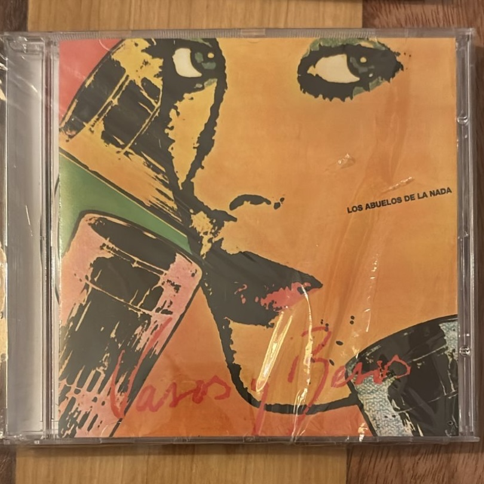

Vasos y Besos

Artista: Los Abuelos de la Nada
Año de edición: 1983
Descripción: Obra cumbre del pop rock nacional liderada por Miguel Abuelo, que incluye himnos generacionales como "Mil horas" y "Chalamán".
Volver a la página principal
Artista: Los Abuelos de la Nada
Año de edición: 1983
Descripción: Obra cumbre del pop rock nacional liderada por Miguel Abuelo, que incluye himnos generacionales como "Mil horas" y "Chalamán".
Volver a la página principal